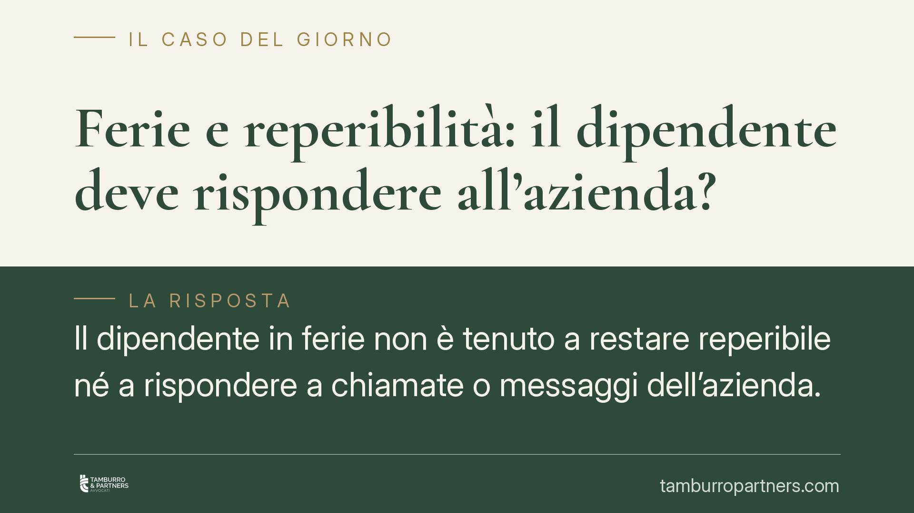

Ferie e reperibilità: il dipendente deve rispondere all'azienda?
Il dipendente in ferie non è tenuto a restare reperibile né a rispondere a chiamate o messaggi dell'azienda. La giurisprudenza ha annullato un licenziamento fondato proprio sulla mancata risposta durante il riposo. Il tema tocca il confine tra potere organizzativo del datore e diritto al recupero psicofisico del lavoratore, oggi rafforzato dal principio di disconnessione.

Il fatto
Un datore di lavoro aveva contestato a un dipendente di non aver risposto ai contatti aziendali durante le ferie, arrivando fino al licenziamento. La sanzione è stata giudicata illegittima: la mancata reperibilità nel periodo di riposo non integra un inadempimento disciplinare.
La vicenda offre l'occasione per chiarire un punto spesso frainteso: le ferie sono un tempo sottratto al potere direttivo del datore, non una sospensione parziale del rapporto in cui il lavoratore resta "a chiamata".
Inquadramento normativo
Il diritto alle ferie ha rango costituzionale. L'articolo 36, terzo comma, della Costituzione stabilisce che il lavoratore ha diritto alle ferie annuali retribuite e non può rinunziarvi. La finalità è precisa: consentire il recupero delle energie psicofisiche e la partecipazione alla vita familiare e sociale.
Sul piano ordinario, l'articolo 2109 del Codice civile riconosce il diritto al riposo annuale retribuito. Il decreto legislativo n. 66/2003 (articolo 10) disciplina la durata minima delle ferie, fissata in quattro settimane annue.
La funzione di reintegro delle energie viene meno se il lavoratore resta vincolato a obblighi di reperibilità. Per questo la giurisprudenza di legittimità ha ritenuto che, in assenza di una specifica pattuizione contrattuale che preveda e retribuisca la reperibilità, il dipendente in ferie non è obbligato a rispondere alle sollecitazioni aziendali.
Va aggiunto un elemento recente: il cosiddetto diritto alla disconnessione, introdotto per il lavoro agile dalla legge n. 81/2017 e ribadito da normative successive, rafforza l'idea che esistano tempi in cui il lavoratore è legittimato a rendersi non contattabile.
Implicazioni pratiche
Per il dipendente, il messaggio è netto: durante le ferie non sussiste, di regola, alcun dovere di rispondere a telefonate, e-mail o messaggi aziendali. Il silenzio non può fondare una contestazione disciplinare, tanto meno un licenziamento.
Unica eccezione: la reperibilità esiste solo se è espressamente prevista da contratto collettivo o individuale, deve essere disciplinata e, di norma, compensata con un'apposita indennità. In tal caso, però, non si parla propriamente di ferie "piene", ma di un istituto distinto.
Per il datore di lavoro, il rischio è concreto: fondare provvedimenti disciplinari sulla mancata risposta di un lavoratore in ferie espone a impugnazioni con esiti sfavorevoli, incluso l'annullamento del licenziamento e le conseguenze economiche connesse.
Restano legittime, invece, esigenze organizzative gestite correttamente: pianificazione anticipata dei periodi di ferie, individuazione di sostituti, definizione di procedure per le emergenze che non gravino sul lavoratore in riposo.
Cosa fare in concreto
- Verificate il contratto. Controllate se il CCNL applicato o il contratto individuale prevedono clausole di reperibilità, con relativa indennità. In assenza, nessun obbligo di risposta durante le ferie.
- Datori: non fondate sanzioni sulla mancata risposta. Evitate contestazioni disciplinari basate sul silenzio del dipendente in ferie: sono ad alto rischio di illegittimità.
- Pianificate le sostituzioni. Organizzate per tempo coperture e deleghe, così da non dipendere dalla disponibilità di chi è a riposo.
- Formalizzate eventuali obblighi. Se l'attività richiede reperibilità, disciplinatela per iscritto, distinguendola dalle ferie e prevedendo un compenso adeguato.
- Dipendenti: documentate. In caso di contestazione, conservate prova del periodo di ferie autorizzato e delle comunicazioni ricevute, utili in un eventuale contenzioso.
Un punto di equilibrio
La questione riflette una tensione ricorrente tra potere organizzativo dell'impresa e tutela del riposo. La direzione tracciata dalla giurisprudenza e dalla normativa sulla disconnessione è chiara: il tempo delle ferie appartiene al lavoratore.
Consigliamo alle aziende di ripensare le prassi informali di "reperibilità di cortesia", spesso tollerate ma prive di base giuridica, e ai lavoratori di conoscere con precisione i propri obblighi contrattuali prima di assumere comportamenti che potrebbero essere fraintesi.
---
*Contributo informativo a cura di Tamburro & Partners - Avv. Giuseppe Tamburro. Non costituisce parere legale.*
Ogni storia di lavoro ha i suoi tempi.
Se gestisci HR e vuoi un confronto su contenzioso, ispezioni o licenziamenti, scrivi allo studio. Ti rispondiamo entro un giorno lavorativo.